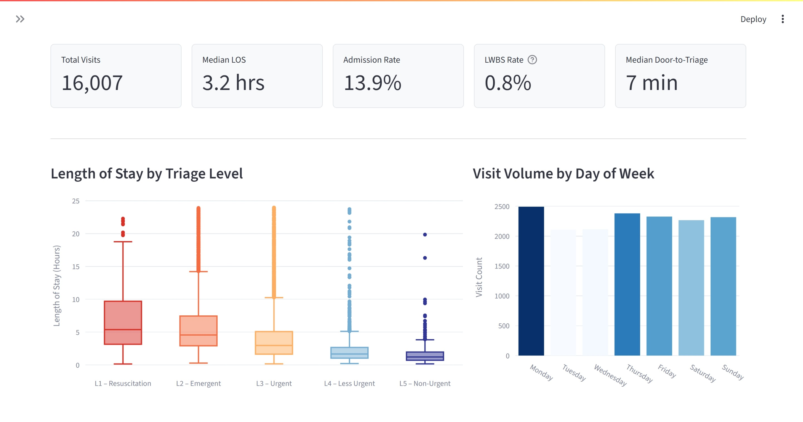
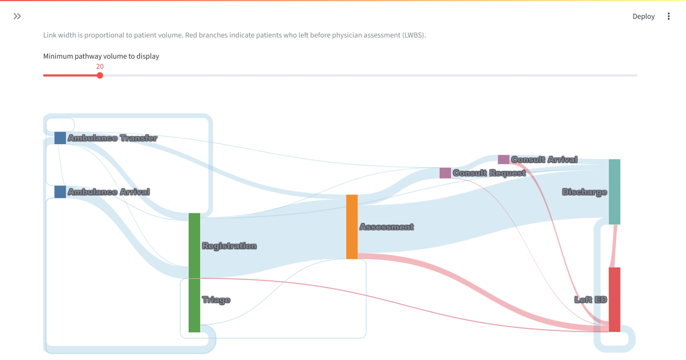
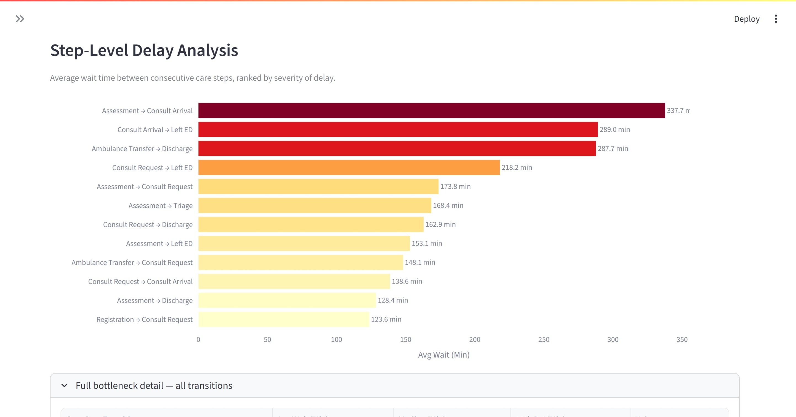
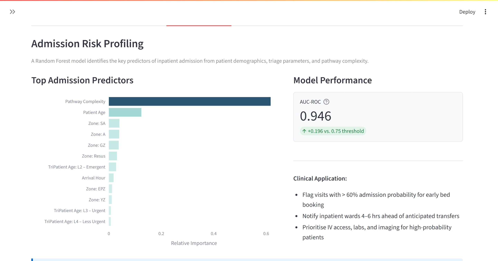
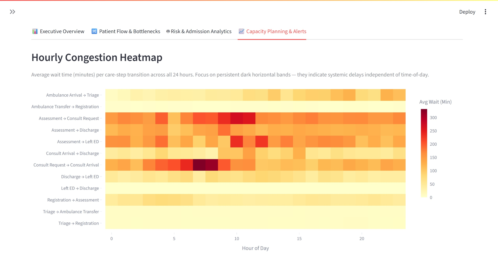
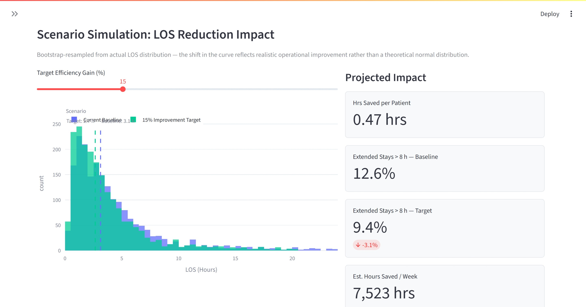

ED Flow Intelligence
An interactive analytics dashboard that converts raw emergency department event logs into four categories of operational intelligence: executive KPIs, patient pathway maps, ML-based admission prediction, and LOS scenario simulation — packaged in a Streamlit interface accessible to clinical operations managers without a data science background.
The problem
Emergency departments log every clinical step — triage, assessment, consult requests, discharges — but these records are rarely used for real-time operational decisions. Without a structured view of patient flow, teams cannot tell which steps cause delays, which patients are heading toward admission hours before it becomes apparent, or how much a targeted efficiency gain would shift overall capacity.
This platform applies process mining and machine learning to answer all three questions from a single event log, packaging the answers into a four-tab interactive dashboard that requires no data science background to operate.
Data pipeline
The pipeline runs end-to-end from a raw CSV event log to four categories of decision-ready insight. All preprocessing is computed once and cached with @st.cache_data; the dashboard renders from in-memory data frames on every user interaction.
Tab 1 — Executive Overview
The status banner renders OPTIMAL / ELEVATED / CRITICAL from median LOS thresholds. Five KPI cards surface the numbers a clinical operations manager needs in under 10 seconds. The LOS box plot decomposes variance by triage level — wider boxes on L1/L2 indicate high-acuity bed-management risk that averages alone would mask.

Tab 2 — Patient Flow & Bottlenecks
The Sankey diagram maps every patient pathway with link width proportional to transition volume. Red branches flowing to "Left ED" visualise LWBS patients directly in the flow. A forward-flow filter removes feedback loops that would create visual clutter; nodes are pinned to fixed x/y clinical-sequence positions so the layout is stable across filter changes.

The bottleneck chart ranks every transition by average wait time. Assessment → Discharge tops the list at 128 minutes average — with a 90th-percentile tail extending to 6+ hours across 11,648 affected visits. This points to a post-assessment discharge-decision bottleneck, not a triage or arrival capacity problem, which changes the intervention target entirely.

Tab 3 — Risk & Admission Analytics
A Random Forest classifier is trained on six features per visit: triage level, age, arrival hour, day of week, physical ED zone, and pathway step count. One-hot encoding via pd.get_dummies avoids the ordinal-coding artifacts that affect tree ensembles when categorical variables are label-encoded. The model reaches AUC-ROC 0.946 on a stratified 20% holdout — well above the 0.75 threshold considered operationally useful for proactive bed pre-alerts.

The high-risk visit flag list surfaces patients with predicted admission probability ≥ 70% early enough to initiate proactive bed booking 4–6 hours ahead of confirmed admission — converting reactive bed scrambles into anticipatory demand management.
Tab 4 — Capacity Planning & Alerts
The hourly congestion heatmap covers the top 12 transitions. It distinguishes two failure patterns that require different interventions: horizontal bands across all hours indicate systemic process failures; diagonal clusters concentrated at shift boundaries indicate handoff delays. Both patterns are invisible in daily or weekly summary statistics.

The scenario simulation bootstrap-resamples from the actual LOS distribution — preserving its real skew and heavy tail — rather than assuming normality. A manager enters a target efficiency gain; the tool projects the resulting LOS distribution, the reduction in visits exceeding 8 hours, and an estimated financial impact from reduced extended-stay costs.

Key findings
| Finding | Metric | Business signal |
|---|---|---|
| Assessment → Discharge bottleneck | 128 min avg · 11,648 visits | Discharge decision, not arrival capacity |
| Consult pathway LOS premium | 9.35 hr vs 2.68 hr (non-consult) | 3.5× LOS multiplier from specialist requests |
| L1 CTAS compliance | 7 min median vs 0 min target | Accreditation gap at most critical triage level |
| L2–L4 CTAS compliance | All exceed benchmark targets | Structural response-time gaps across 3 levels |
| Admission prediction model | AUC-ROC 0.946 | Operationally useful for bed pre-alerts |
| LWBS rate | 0.8% overall | Below 2% national concern threshold |
Tech stack
Pure Python — no process mining framework dependencies. The Sankey diagram is built directly from raw transition counts using Plotly Graph Objects; no NetworkX or external graph library is required.
Future directions
Several extensions could deepen operational value:
- Live ADT feed — replace the static CSV with a hospital Admission-Discharge-Transfer feed for real-time dashboarding
- Conformance checking — flag visits that deviate from the standard clinical pathway (ISO 9001 audit use case)
- Probability calibration — add Platt scaling to the admission model to improve clinical decision threshold reliability
- Bed demand forecast — extend the simulation to project inpatient bed demand 24 hours ahead from current admission probability scores
- Multi-site comparison — run the same pipeline across multiple EDs to benchmark process efficiency and identify best practices